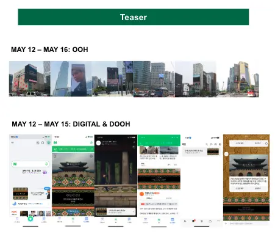
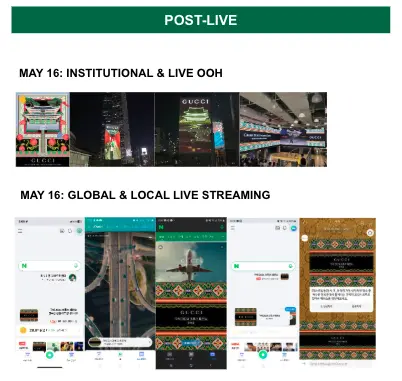
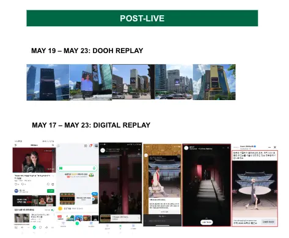
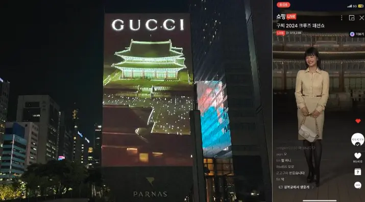

01 · TEASER
Build anticipation.
OOH, DOOH and digital teasers seeded the palace setting before the show.
GUCCI KOREA · CRUISE 2024 · 2023
I localized a global fashion show into a three-phase Korea launch—building anticipation, owning the live moment and extending attention afterward.
WATCH THE CAMPAIGNMARKET BEHAVIOR
THE CHALLENGE
Korean audiences move between search, messaging, social video and livestream commerce. The campaign needed a connected journey before, during and after the show.
LAUNCH ARCHITECTURE
THE DECISION
Every phase built demand before the show and carried attention beyond it.

01 · TEASER
OOH, DOOH and digital teasers seeded the palace setting before the show.

02 · LIVE
The global stream became a local cultural event across Seoul and Korean platforms.

03 · POST-LIVE
Replay, cutdowns and platform-native content converted one night into sustained reach.
STAKEHOLDER ORCHESTRATION
WHAT I LED

01
Mapped how Korean audiences move between search, social, messaging and commerce.
02
Connected global direction, local agencies and platform partners to one launch rhythm.
03
Built one reporting story that separated live impact from replay-driven growth.
CAMPAIGN RESULTS
THE RESULT
Digital impressions across the integrated campaign.
Measurable views generated across launch and replay.
Clicks connecting campaign attention to deeper engagement.
THE TAKEAWAY
The work turned a single global event into a locally relevant media system—then used the result to show where sustained audience value was actually created.
After earning the Gucci team’s trust through campaign execution, we expanded the partnership into new business channels the following quarter.